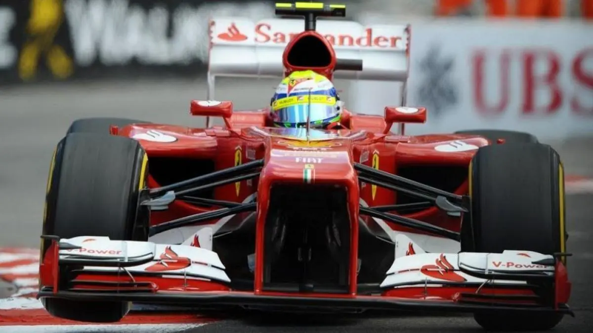
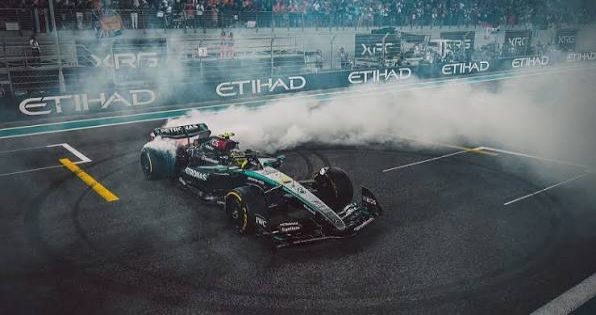

Fórmula 1
Es la categoría reina del automovilismo: carreras de unos 300 kilómetros que duran algo menos de dos horas. Cada coche lo conduce un solo piloto y todo se decide en la pista, en los boxes y en la estrategia.
Dos formas de entender el automovilismo de élite: la Fórmula 1 busca la máxima velocidad en carreras cortas e intensas, y el WEC pone a prueba la resistencia de coches y pilotos durante horas.
Ver el catálogo Información básica

Es la categoría reina del automovilismo: carreras de unos 300 kilómetros que duran algo menos de dos horas. Cada coche lo conduce un solo piloto y todo se decide en la pista, en los boxes y en la estrategia.
El Campeonato del Mundo de Resistencia reúne carreras de entre 6 y 24 horas. Los coches los comparten varios pilotos que se turnan al volante, y en pista conviven categorías de velocidades distintas.
El Gran Premio se corre por las calles del principado: curvas estrechas, muros muy cerca y adelantar es casi imposible.
Desde 1923, los equipos compiten un día y una noche seguidos en el circuito de la Sarthe, en Francia.
Aquí se disputó en 1950 la primera carrera del Mundial de Fórmula 1: el Gran Premio de Gran Bretaña.

Un equipo de Fórmula 1 alinea dos pilotos por temporada, pero detrás de cada coche trabajan cientos de personas: ingenieros, mecánicos y estrategas.
Los patrocinadores ayudan a financiar el equipo, y por eso sus logotipos cubren el monoplaza y el mono del piloto.